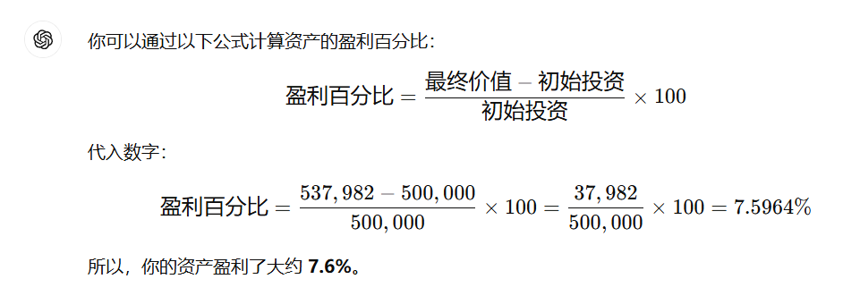
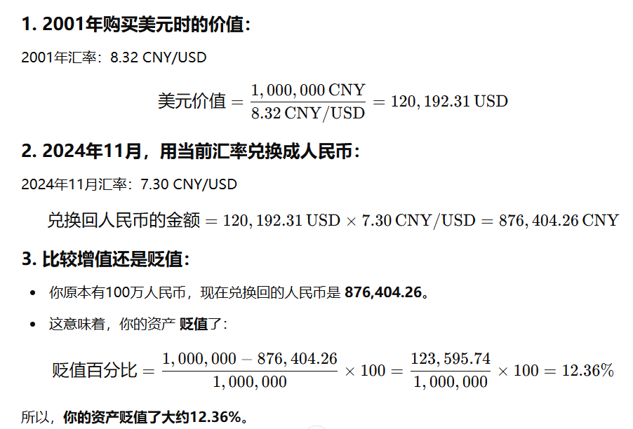

人民币贬值带来的经济问题
上一篇：人民币升值带来的经济问题
【#人民币汇率为何连跌##专家称人民币是被动贬值#[话筒]】12月2日，人民币对美元即期汇率相继跌破7.25、7.26关口，盘中最低至7.2725。12月3日早间，离岸人民币对美元汇率接连跌破7.30和7.31关口，创下去年11月初以来的新低。东方金诚首席宏观分析师王青分析，首要原因是美元指数出现了大幅的上扬，带动人民币对美元被动的贬值，此外，12月2日国内10年期国债收益率大幅下行，中美利差扩大等，也都会对人民币汇价带来一定的影响。展望后市，王青认为，未来在美元剧烈波动的过程中，人民币汇价还会保持相对稳定的状态。他判断，央行支持性的货币政策立场不会因为汇率波动而改变。@中新经纬

总体来看，人民币是先升值，后贬值。
从2001年-2011年，CNY/USD从8.32变成了6
2011-2021年，人民币汇率有涨有跌，总体是贬值的。CNY/USD从6变成了7.3
问题
假设我有50万人民币，汇率2023年10月初：约 6.75 CNY/USD，换了美元usd，在2024年11月的时候，7.2443 CNY/USD，那么我之前的50万人民币，在2024年11月价值多少人民币？
通过以下步骤计算：
2023年10月初，50万人民币换算成美元：
500,000 CNY ÷ 6.75 CNY/USD = 74,074.07 USD。2024年11月，74,074.07美元换算回人民币：
74,074.07 USD × 7.2443 CNY/USD = 537,981.94 CNY。
所以，50万人民币在2024年11月的价值约为537,982人民币。
通过以下公式计算资产的盈利百分比：

所以，你的资产盈利了大约 7.6%。
问题二
假设我有100万人民币，汇率2001年：约 8.32 CNY/USD，在2024年11月的时候，7.3CNY/USD，那么我之前的100万人民币，相对于在2001年购买美元，增值还是贬值了？
我们可以通过以下步骤计算你的100万人民币在2001年和2024年11月的美元价值，并比较它们的增值或贬值情况。

所以，你的资产贬值了大约12.36%。
总结
总的来说，人民币升值美元贬值，应该购买人民币，卖出美元；人民币贬值美元升值，应该购买美元，卖出人民币。
汇率的变化可以通过以下规则来判断：
人民币升值，美元贬值：
如果人民币升值，意味着你用相同数量的人民币能够兑换到更多的美元。在这种情况下，你应该购买人民币，卖出美元，因为人民币的价值增强了。人民币贬值，美元升值：
如果人民币贬值，意味着你用相同数量的人民币兑换到的美元减少了。在这种情况下，你应该购买美元，卖出人民币，因为美元的价值增强了。
汇率变化直接影响货币的购买力。如果你预期人民币会升值（即人民币兑美元汇率上涨），你可以先买入人民币，等升值后再兑换成美元。反之，如果你预期人民币会贬值（即人民币兑美元汇率下降），你可以购买美元，等美元升值后再兑换回人民币。
以此类推，如果土耳其货币（里拉）贬值并且伴随着恶性通胀，通常会有以下经济影响和策略：
1. 土耳其里拉贬值：
- 当土耳其货币贬值时，意味着用相同数量的土耳其里拉（TRY），你能兑换到更少的其他货币（比如美元、欧元）。因此，美元等外币的价值相对于里拉上升。
2. 恶性通胀：
- 恶性通胀意味着物价不断上涨，购买力下降。在土耳其，恶性通胀通常会导致人们的消费和储蓄价值快速缩水，物价飙升，居民可能会尽量避免持有贬值的里拉，转而持有更稳定的外币（如美元、欧元等）。
应对策略：
购买外币（美元、欧元等）：当本国货币贬值并伴随恶性通胀时，购买外币是防止资产缩水的常见策略。这是因为外币通常更为稳定，不会受到本国货币大幅贬值和通胀的影响。
避免持有里拉：在恶性通胀的环境下，持有本国货币（里拉）会导致资产快速贬值，因此人们会转向外币、贵金属（如黄金）或其他避险资产。
投资贵金属（黄金、白银等）：在高通胀或货币贬值的情况下，黄金等贵金属被视为保值资产，因此很多投资者会选择将资金转移到黄金等实物资产。
总结：
- 如果你处于土耳其或面临类似情况的国家，在里拉贬值和恶性通胀的环境下，应该购买外币（例如美元、欧元等）或贵金属，并尽量避免持有贬值的本国货币。这样可以有效保护资产的购买力和价值。